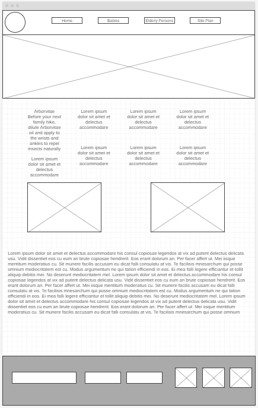

Overview
Purpose
The purpose of this website is to inform and educate people who are interested in the benefits of essential oils, this is very important for a Multilevel company that wants to make accessible and complete information available to the customer.
Audience
This is a place for people looking to be in control of their health and well-being. You will learn how to use your essential oils and the benefits of each of them, I will also show you how to make mixtures and different application techniques, and you can have the information at hand when you need it from your cell phone or computer. This is your place
Branding
Website Logo

Style Guide
Color Palette
Palette URL:
https://coolors.co/a578a1-6ea563-ebc3fa-ffffff-000000| Primary | Secondary | Accent 1 | Accent 2 |
|---|---|---|---|
| African Violet | Asparagus | Mauve | White |
Typography
Heading Font: Caveat
Virtual Workshops: One of the highlighted features of my page is the virtual workshops you can participate in. These interactive workshops will give you the opportunity to learn specific techniques, such as the proper application of essential oils, creating balanced synergies, and incorporating aromatherapy into your daily routine. Participants can interact with each other, sharing their own experiences and questions.
Paragraph Font: Comfortaa
Aromatic Community: Aromatherapy is more than a hobby; it is a community that shares a common love for nature and holistic well-being. In the "Aromatic Community" section, you can connect with other essential oil enthusiasts. Share your experiences, ask questions, and find inspiration in a space where a passion for the natural unites us.
Exploring the World of Essential Oils: An Aromatic Journey Through My Website Welcome to my virtual corner, a space dedicated to exploring the fascinating world of essential oils. My passion for these aromatic treasures has become the driving force behind the creation of this website, where I will share my knowledge, experiences, and discoveries with all lovers of aromatherapy and natural health.
Welcome to My Aromatic World: As you navigate through my page, you will immerse yourself in a world of exquisite fragrances and therapeutic properties. The page's aesthetics reflect my love for nature and simplicity, with soft and harmonious colors that invite exploration and learning. From the first visit, we want you to feel the warmth and serenity that essential oils bring to our lives. Deep Knowledge Shared with Love: As an essential oil enthusiast, I have dedicated time and effort to delve into their study. In my "Knowledge" section, you will find informative articles, detailed guides, and practical tips. From the therapeutic benefits of each oil to recipes for personalized blends, my goal is to provide valuable information that allows you to make the most of these natural essences.
Colored paragraph example
In summary, this website is a reflection of my love for essential oils and my desire to share this love with you. Join me on this aromatic journey, where exploration, learning, and connection form the very essence of our virtual community. Welcome to this online aromatic oasis!
Navigation
Site Map
Wireframes
Home

Babies
Elderly Persons